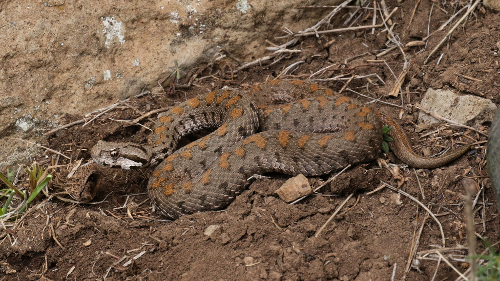
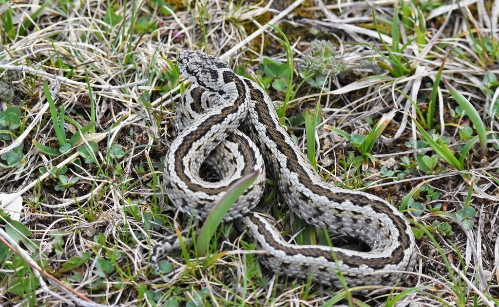
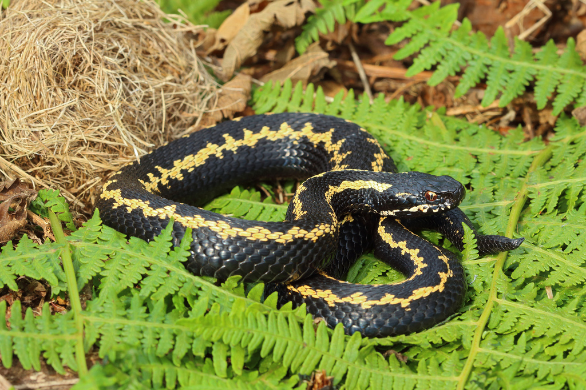
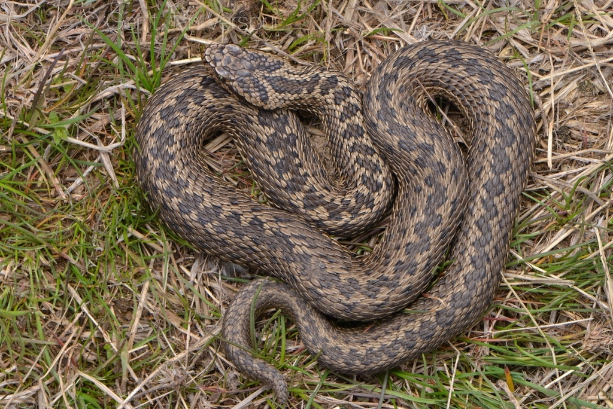
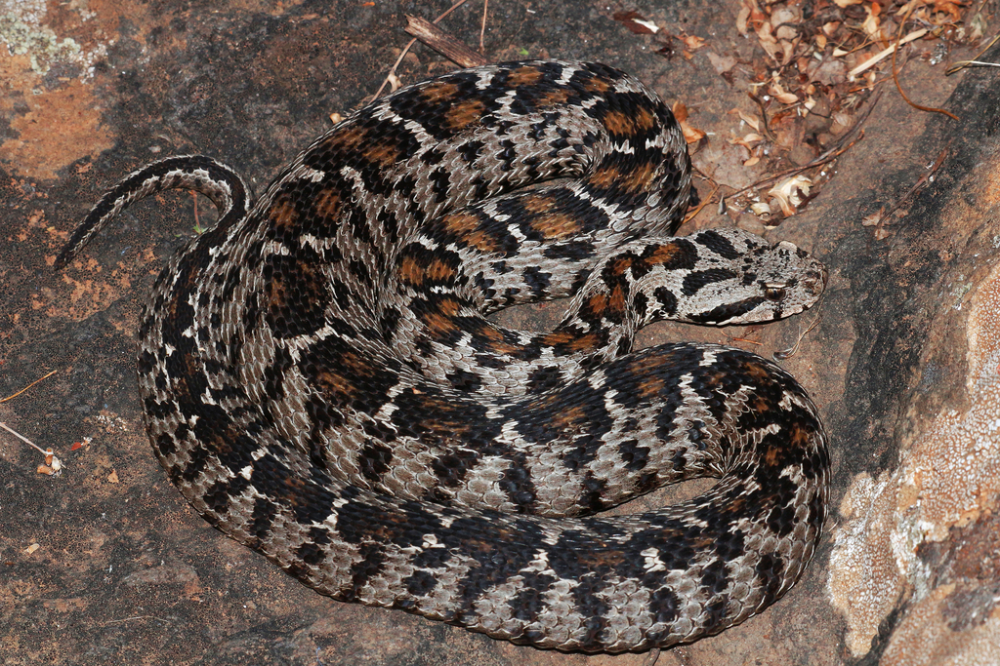
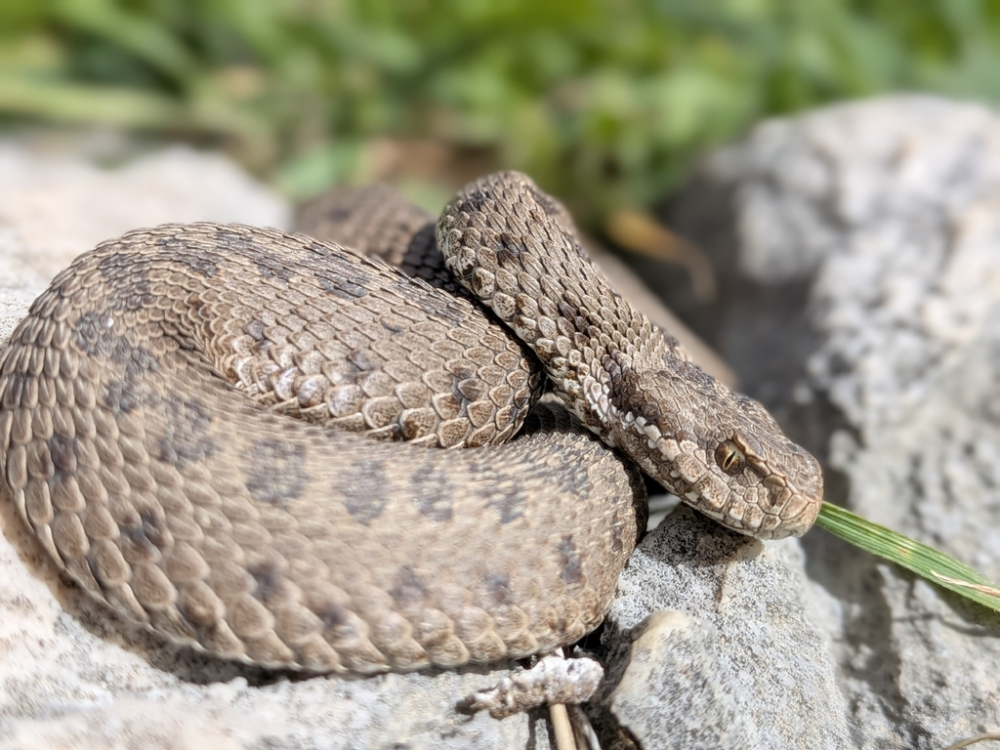
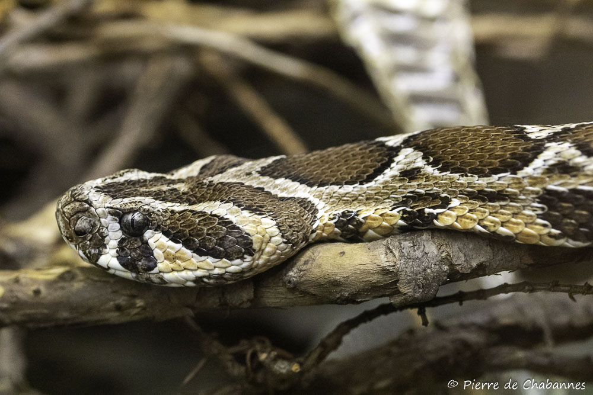

Batı Türkiye'de yaygın, güçlü zehre sahip bir engerek türüdür.

Türkiye'nin en iri ve tehlikeli engerek türlerinden biridir.

Doğu Anadolu'nun yüksek kesimlerinde yaşayan nadir bir türdür.

Çoruh vadisi çevresine endemik, oldukça nadir bir engerek.

Çayır alanlarda yaşayan, nispeten daha küçük bir türdür.

Burnundaki karakteristik çıkıntı ile kolayca ayırt edilir.

Karadeniz bölgesinin nemli ormanlarında yaşayan bir türdür.

Trakya ve civarında görülen, yaşam alanı daralmakta olan bir tür.

Dağlık çayırlarda, yüksek rakımlarda yaşamayı tercih eder.

Sadece belirli bölgelerde bulunan endemik ve nadir bir engerek.

Kuzeydoğu Anadolu'ya özgü, oldukça nadir bir varyasyon.

Küçük boylu, endemik ve hassas bir türdür.

Güneydoğu Anadolu'nun güney kesimlerinde görülür.